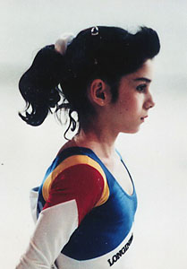

Andreea Cacovean (ROM)
1993 Jr. European B Champion
1993 World UB Bronze Medalist

Medal Total
World Championships: 1 Gold, 1 Bronze
Andreea was born in Turda on September 15, 1978. She began gymnastics at age 7.
Competition Results
1991
Jr. Balkan Championships: 2nd AA
1992
Jr. European Team Championships: 1st Team, 2nd AA
1993
Cottbus International: 1st AA, 3rd FX
Golden Sands International: 1st AA
International Championships of Romania: 5th AA
Jr. European Championships: 2nd AA, 1st B, 2nd UB, 3rd FX
World Championships: 6th AA (prelims), 3rd UB
1994
USA-ROM Dual Meet: 14th AA
World Championships (Brisbane): 25th FX (prelims), 34th UB (prelims)
1995
French International: 2nd AA, 5th UB, 5th B
Ostrava International: 2nd AA
ROM Championships: 3rd AA
ROM-GDR Dual Meet: 1st Team, 3rd AA
World Championships: 1st Team
1996
ITA-BLR-ROM-RUS: 26th AA
Rome Grand Prix: 4th AA
This page was created on June 25,
2005.
© Gymn Forum